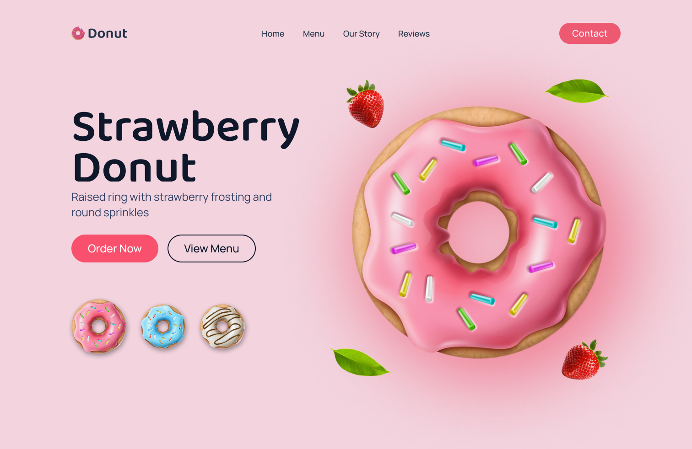
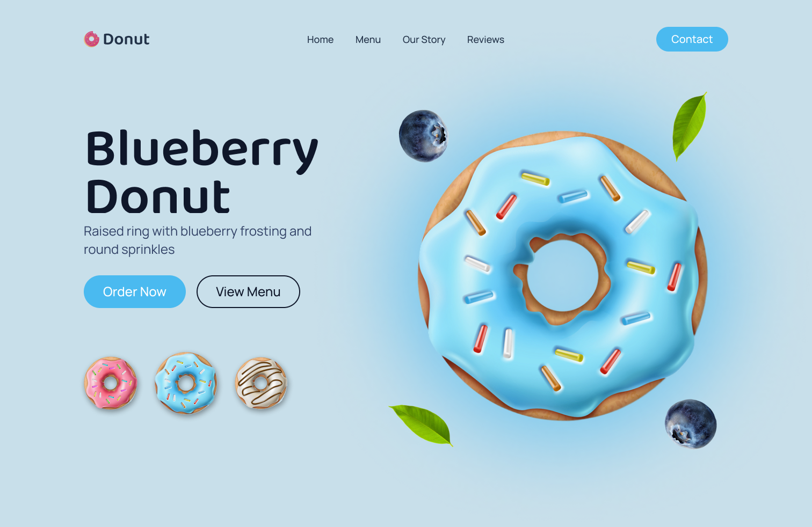
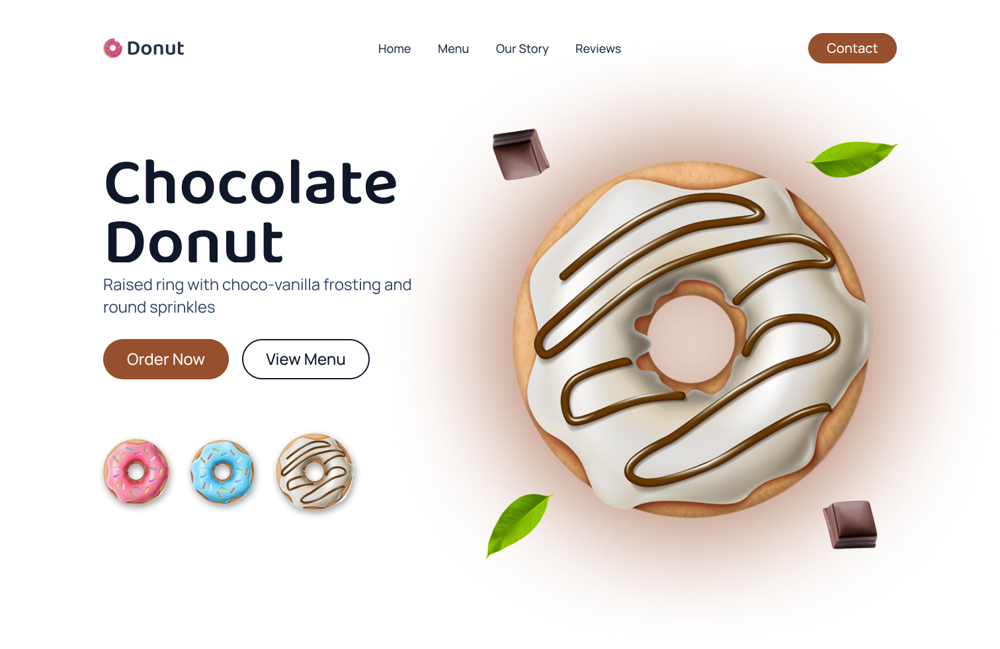

A small experiment built to practice animation and color work in Figma — not a full UX project, just a landing page concept where picking a flavor completely re-skins the page.

This one didn't start from a problem — it started from wanting to get better at Figma's animation tools. A donut shop landing page was just a fun, colorful excuse to practice, not a real business or a research-backed UX problem. I think it's worth including anyway, because the animation work turned out genuinely well and it's a different skill than the case-study-style projects elsewhere in this portfolio.
Design one consistent landing page layout, then build three fully re-themed states — blueberry, chocolate, and strawberry — where selecting a flavor swatch smoothly transitions the whole page: colors, the hero donut, and the floating accent elements around it.
Every version keeps the exact same structure — nav, headline, subheading, two buttons, three flavor swatches — but the color palette, hero illustration, and floating accents (berries, chocolate pieces, leaves) all change together depending on which flavor is selected.


This was mostly about spending real time inside Figma's animation and prototyping tools instead of just designing static screens. Building three distinct-but-consistent themes was a good excuse to think more carefully about color palettes than I usually do, and figuring out how to make a flavor swap feel smooth rather than jarring taught me more about transition timing than any single case study screen would have.
I'm keeping this honest: it's a small, self-directed experiment, not a research-backed case study. I think it still belongs here because the craft and animation work is something the other projects don't really show.